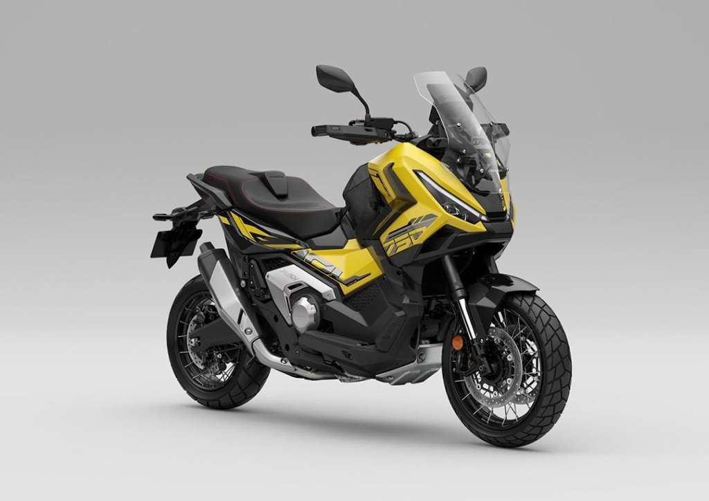

💪 Potencia y Estilo
La Honda X-ADV 750 redefine lo que significa libertad en dos ruedas. Combina el confort de un scooter con el rendimiento de una motocicleta adventure. Equipada con un motor bicilíndrico de 745 cc y una transmisión de doble embrague (DCT), ofrece una conducción suave tanto en ciudad como en caminos difíciles.
Su diseño robusto, suspensión de largo recorrido y neumáticos mixtos hacen de la X-ADV una compañera ideal para todo tipo de aventuras.